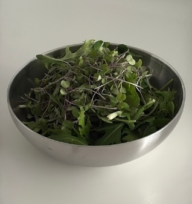
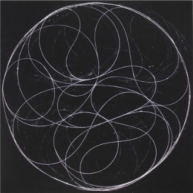

I.
Continue Where You Left Off
Resume the next Method checkpoint and pick up exactly where
you paused.

This space was created to help you master the practice of self-orientation, designed to be used often and ongoing. Read the first journal entry to learn more.
Navigating This SpaceI.
Resume the next Method checkpoint and pick up exactly where
you paused.
II.
A short reset on what your skin and energy are communicating this week.

III.
A warm, mineral-rich bowl made for low-effort nights and
steady mornings.

IV.
Low-lift focus tracks for routine blocks, prep, and gentle transitions.